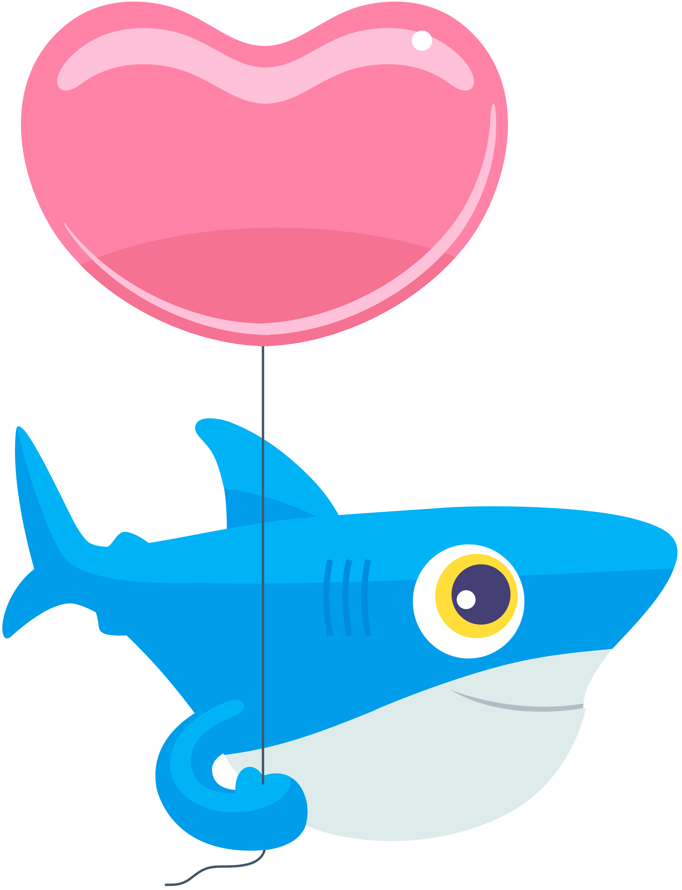

The CLI isn't as scary as you think
VanJS
April 16th, 2025
Gavin Mogan
Senior Software Engineer at Digital Ocean.

https://www.gavinmogan.com

FIT TEXT
CAN BE USED FOR MULTIPLE HEADLINES
How to get there? - Mac
console.log('Hello, World!');
How do I get started?
https://m.do.co/c/7d6859326b6a